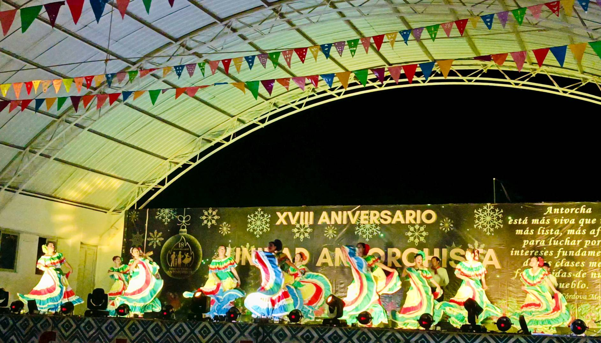
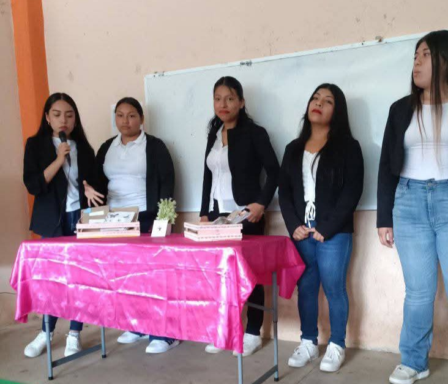
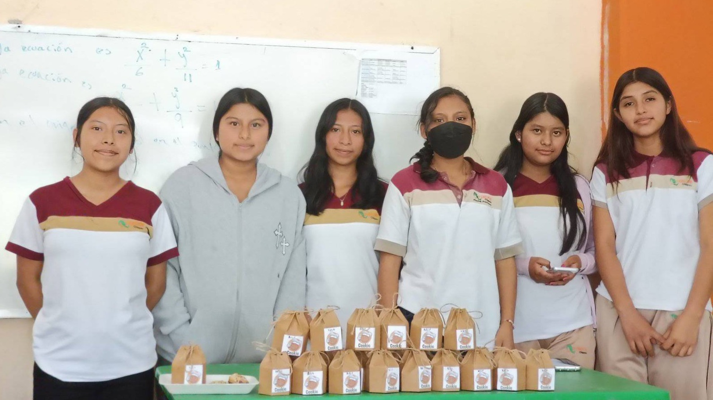
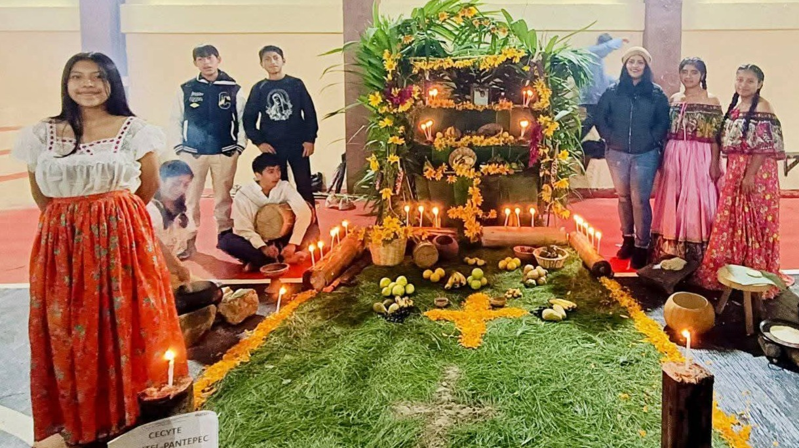
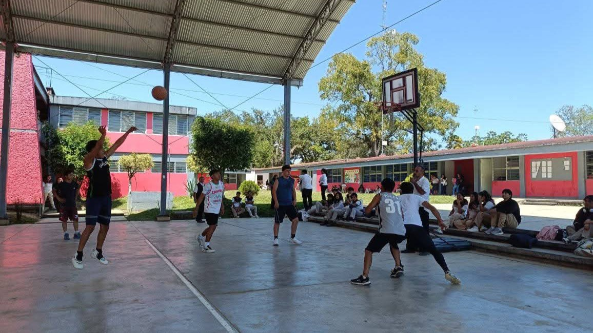
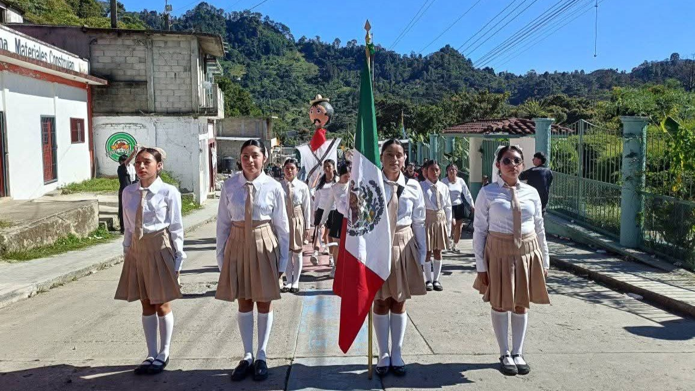
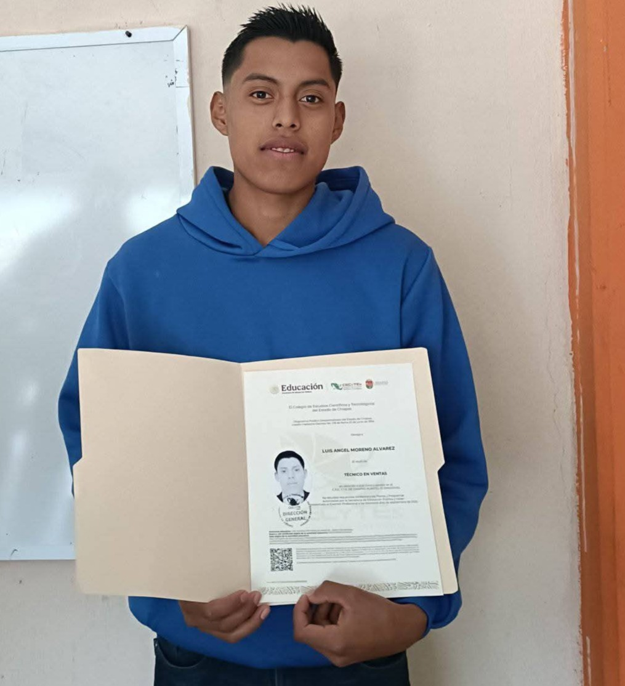

Oferta Educativa
1Carrera Técnica en Ventas
Ofrece educación media superior bivalente, permitiendo a los estudiantes obtener un título técnico profesional junto con el bachillerato. Nuestra oferta incluye especialidades económicas y administrativas , con un enfoque en competencias laborales, sustentabilidad e innovación tecnológica
2Seguridad en Espacios
La carrera permite a los estudiantes a lo largo del bachillerato, la adquisición de competencias desde distintos ámbitos que promueven la formación integral, sustentada en las genéricas, disciplinares y profesionales, complementadas con las de productividad y empleabilidad.
3Competencias Profesionales
- Auxilia en el proceso de administración del área de ventas.
- Auxilia en la elaboración del estudio de mercado.
- Auxilia en la comercialización, con estrategias de comunicación.
- Asesora al cliente.
- Posiciona el producto y/o servicio en el mercado.
Actividades Destacadas

Concursos Academicos

Proyectos Escolares

Expo-Ventas

Eventos Culturales

Encuentros Deportivos

Eventos Culturales
Formación Académica y Técnica
Prepárate para tu futuro profesional
En el CECyT 10, los estudiantes reciben una formación integral que combina el bachillerato con una carrera técnica, brindando conocimientos teóricos y prácticos que fortalecen su desarrollo académico.
Este modelo educativo permite a los alumnos incorporarse al mundo laboral con habilidades reales o continuar sus estudios superiores con una base sólida.
Saber más